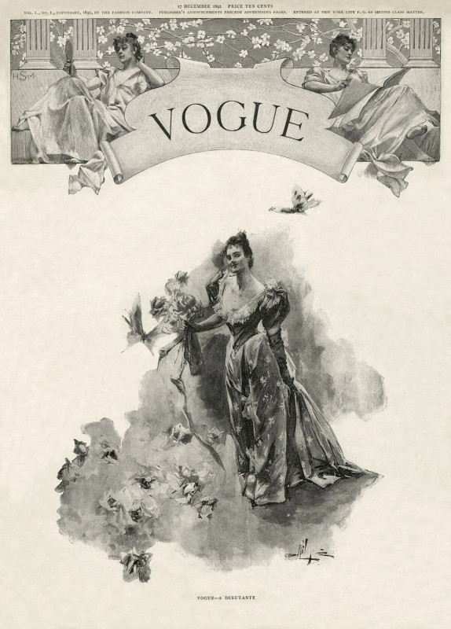
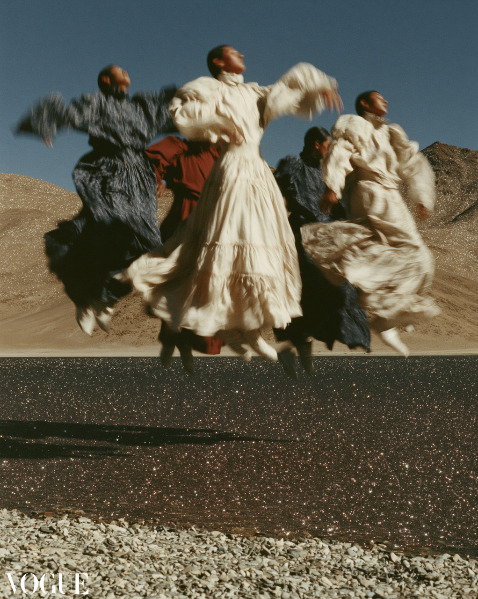
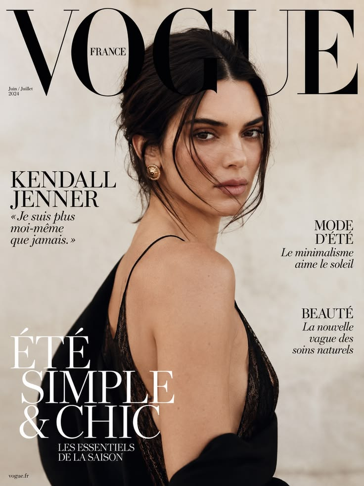
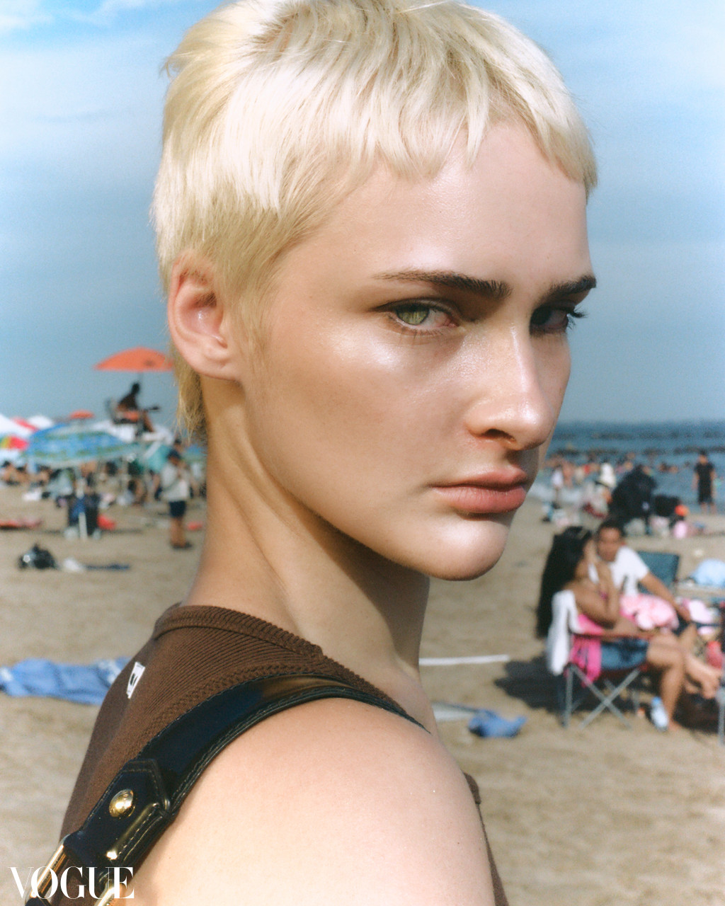

История создания: Как всё начиналось
Журнал Vogue был основан 17 декабря 1892 года в Нью-Йорке. Идея принадлежала Артуру Болдуину Тюрнюру — молодому представителю высшего света, выпускнику Принстонского университета и члену элитного клуба Grolier. В создании издания также приняли участие представители самых состоятельных семей Америки того времени, включая наследников Вандербильтов и директора Иллинойской центральной железной дороги.
Изначально Vogue задумывался не как журнал о моде в современном понимании, а как еженедельная газета (выходила на 16 страницах), освещающая жизнь нью-йоркского светского общества. Сам Тюрнюр описывал его как «достойный и подлинный журнал о светской жизни, моде и церемониальной стороне жизни». В первые годы существования издание рассказывало о театральных премьерах, художественных выставках, новых книгах, а также публиковало светские новости и спортивные обзоры для мужчин.
Цена первого выпуска составляла всего 10 центов, что делало журнал доступным для среднего класса, желавшего приобщиться к жизни элиты. Однако настоящий расцвет издания связан с именем Конде Монтроза Наста, который приобрел Vogue в 1909 году. Именно Наст полностью переориентировал журнал на моду, отказался от литературных страниц, увеличил объем и сделал обложку цветной. Он также назначил главным редактором Эдну Чейз, которая проработала в этой должности с 1914 по 1951 год.
Первый выпуск: Обложка, которая вошла в историю
Что было на обложке?

Самая первая обложка журнала Vogue (1892 год). Иллюстрация А. Б. Венцеля.
Обложку самого первого выпуска Vogue украшало не фото, а черно-белый рисунок. Это было изображение дебютантки — молодой девушки, выходящей в свет. Автором иллюстрации выступил художник А. Б. Венцель, который позже прославился иллюстрациями к роману Эдит Уортон «Дом веселья». Этот выбор был неслучаен: он подчеркивал, что Vogue — это в первую очередь издание о светской жизни, а не только о тряпках.
Интересно, что первая обложка не содержала никаких фотографий. Vogue начал использовать цветные фотографии на обложке только в 1932 году, а до этого на протяжении десятилетий читатели видели изысканные иллюстрации и рисунки.
Ключевой факт: Первый редактор Vogue, Джозефина Реддинг (занимала пост с 1892 по 1900 год), известна не только тем, что дала журналу имя. Она обожала животных и активно включала в издание материалы о них. Историки моды отмечают, что при ней страницы Vogue «лаяли, мяукали, чирикали и ревели» от рассказов о животном мире. Именно Реддинг также яростно критиковала моду своего времени, называя силуэты с турнюрами и пышными рукавами «уродством».
Содержание номера
Первый выпуск представлял собой смесь светской хроники и модных заметок. В нем публиковались:
- Светские новости: кто на ком женится, какие балы и приемы состоятся в ближайшее время.
- Обзоры театральных постановок и музыкальных концертов.
- Эскизы костюмов и описания модных тенденций того времени.
- Спортивные обзоры (для мужской аудитории).
- Короткий рассказ, который, впрочем, не прижился в журнале.
В первом номере также был опубликован дополнительный выпуск, посвященный светскому сезону 1892 года. В нем расписывались детали предстоящих свадебных завтраков, балов и танцевальных вечеров на Верхнем Ист-Сайде.
Эволюция журнала: От светской хроники до библии моды
Путь Vogue от небольшой нью-йоркской газеты до глобального бренда занял несколько десятилетий и сменил несколько эпох.
Эпоха Конде Наста (1909–1940-е)
После покупки журнала в 1909 году Конде Наст начал превращать Vogue в издание, которое мы знаем сегодня. Он сделал ставку на визуальную составляющую, привлек лучших фотографов и иллюстраторов. В 1914 году Эдна Чейз стала главным редактором и оставалась на этом посту 37 лет — это самый долгий срок в истории журнала. В 1932 году Vogue впервые разместил на обложке цветную фотографию, что стало революцией в издательском деле.
Диана Вриланд и «золотая эра» (1960-е)
В 1960-е годы главным редактором стала Диана Вриланд — легендарная личность, которая превратила Vogue в один из самых влиятельных журналов мира. Именно при ней на страницах появились такие модели, как Твигги и Пенелопа Три, ставшие иконами стиля. Вриланд ценила эксцентричность, фантазию и смелые решения, что сделало журнал центром культурной жизни.

Съемка «Lift». Автор: Harsh Jani.
Анна Винтур и современность (с 1988)
С 1988 года главным редактором американского Vogue является Анна Винтур. Она изменила подход к обложке: вместо крупного плана лица модели она стала помещать на обложку фотографии в полный рост, уделяя внимание одежде и образу в целом. Под ее руководством Vogue стал не просто журналом, а медиа-империей, включающей цифровые платформы, видео-контент и масштабные мероприятия, такие как Met Gala.

Кендалл Дженнер на обложке Vogue France, июнь/июль 2024.

Съемка «Morethen Sea». Автор: Yui Lin.
Vogue сегодня: Журнал издается в 22 странах мира, его международная аудитория превышает 12 миллионов читателей печатной версии, а ежемесячная онлайн-аудитория составляет более 67 миллионов пользователей. Vogue — это не просто издание о моде, это институция, определяющая культурные тренды на протяжении более века.